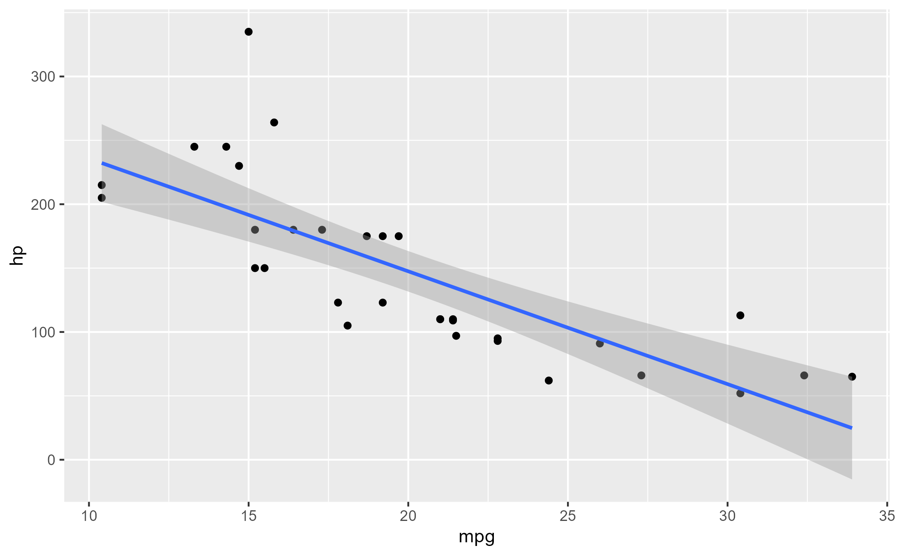

last_ggtrace() retrieves the last trace dump created by ggtrace() - i.e., from the last time
the trace has been triggered.
Details
A tracedump refers to the output of an expression evaluated inside a traced function when
a trace is triggered. In the context of ggtrace(), the tracedump is a list that is as long as the number of
step-expression pairs, where each element is the output of each expression (trace_exprs) evaluated at each
step (trace_steps) inside the execution environment of the function or ggproto method.
clear_last_ggtrace() sets the value of last_ggtrace() to NULL and returns NULL.
Examples
library(ggplot2)
ggtrace(StatSmooth$compute_group, trace_steps = -1, trace_exprs = quote(head(prediction)))
#> `StatSmooth$compute_group` now being traced.
ggplot(mtcars, aes(mpg, hp)) + geom_point() + geom_smooth(method = 'lm')
#> `geom_smooth()` using formula = 'y ~ x'
#> Triggering trace on `StatSmooth$compute_group`
#> Untracing `StatSmooth$compute_group` on exit.

last_ggtrace()
#> [[1]]
#> x y ymin ymax se flipped_aes
#> 1 10.40000 232.2531 201.8649 262.6414 14.87963 FALSE
#> 2 10.69747 229.6265 199.9139 259.3392 14.54880 FALSE
#> 3 10.99494 227.0000 197.9569 256.0430 14.22094 FALSE
#> 4 11.29241 224.3734 195.9934 252.7534 13.89627 FALSE
#> 5 11.58987 221.7468 194.0230 249.4707 13.57502 FALSE
#> 6 11.88734 219.1203 192.0450 246.1956 13.25743 FALSE
#>
ggtrace(
StatSmooth$compute_group,
trace_steps = -1,
trace_exprs = quote(prediction),
verbose = FALSE
)
#> `StatSmooth$compute_group` now being traced.
ggplot(mtcars, aes(mpg, hp)) + geom_point() + geom_smooth(method = 'lm')
#> `geom_smooth()` using formula = 'y ~ x'
#> Triggering trace on `StatSmooth$compute_group`
#> Untracing `StatSmooth$compute_group` on exit.
head(last_ggtrace()[[1]])
#> x y ymin ymax se flipped_aes
#> 1 10.40000 232.2531 201.8649 262.6414 14.87963 FALSE
#> 2 10.69747 229.6265 199.9139 259.3392 14.54880 FALSE
#> 3 10.99494 227.0000 197.9569 256.0430 14.22094 FALSE
#> 4 11.29241 224.3734 195.9934 252.7534 13.89627 FALSE
#> 5 11.58987 221.7468 194.0230 249.4707 13.57502 FALSE
#> 6 11.88734 219.1203 192.0450 246.1956 13.25743 FALSE